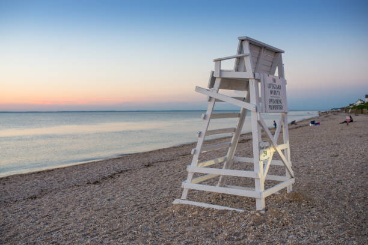
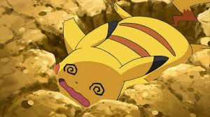
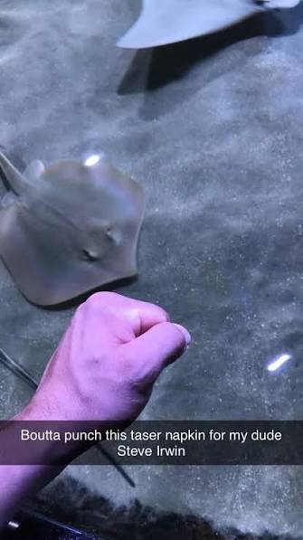

Tropy Things to Know:
The Top Stories
Hurricane Fishing
Nothing beats standing on a life guard chair at midnight in pitch black
skies fishing while a hurricane is coming in. The attempt to fish was futile
as this was a fight for survival. We escaped the lifeguard chair as the water
levels rose. Swimming to the shore with fishing gear in hand.

Building Climbing
We climbed a building Pammy (RIP🪦) always said was run by gangsters.
We hopped from pole to AC unit to small ledge to eventually on the roof.
I remember sending a picture to Pammy and could hear her yell from
Bud's (also RIP 🪦) house.

Pepto Bismol + Fire Hour Energy
Ah yes, the 12 hour drive that almost killed us both. I may have had a
slight overdose on 5 Hour Energy and Pepto Bismol. I suffered from
extreme nausea and shakes and was also falling asleep. "STOP SWERVING"
I had screamed at me nearly 100 times.

Tropy's Take North Carolina
A rendezvous heard around the world. We met in Jacksonville City, NC
and a great week. Aquariums, beach time, good eats, and all the Pokemon
playing two nerds could ask for.
